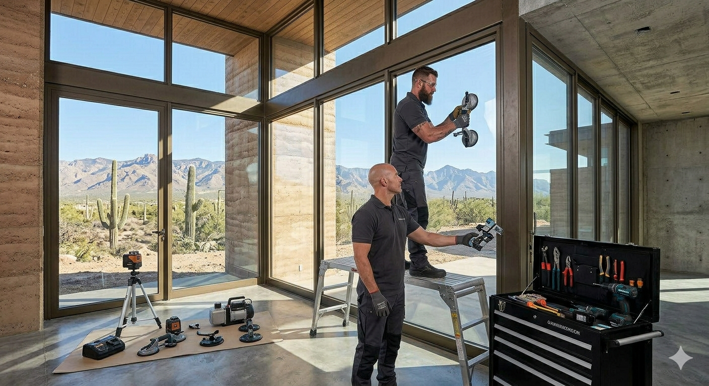
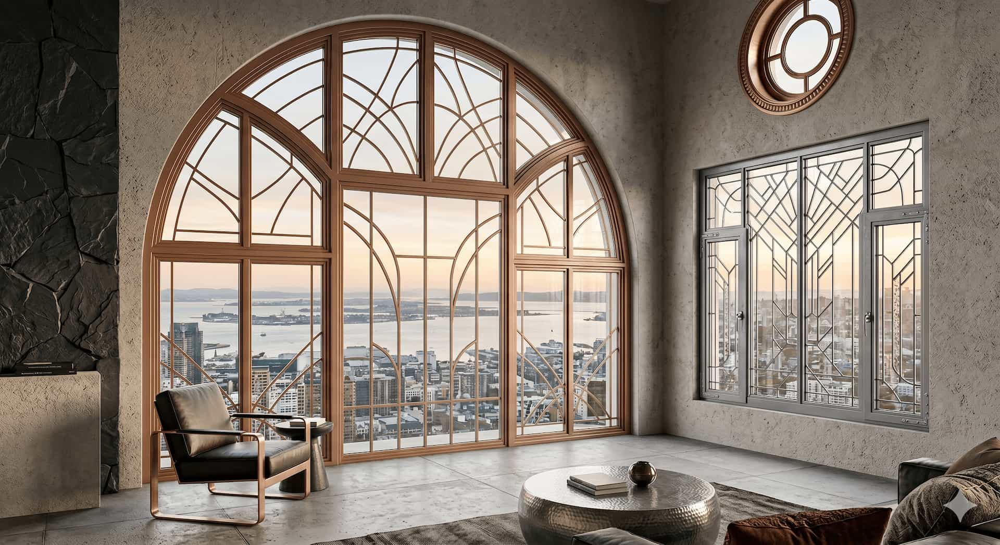

Existing window condition
Ask how the provider evaluates frames, seals, water damage, insulation gaps, hardware, exterior trim, and surrounding wall conditions.
Frame & Light helps homeowners request contact from independent providers for window replacement projects. The platform does not replace windows directly or act as a contractor.

Window replacement may be relevant when existing windows are drafty, difficult to open, visually outdated, damaged, fogged, inefficient, or no longer aligned with the look and comfort expectations of the home.
Replacement projects can vary significantly. Some homes may be suited for insert replacement, while others may require a full-frame approach because of frame damage, water concerns, poor insulation, or design changes.
Frame & Light helps homeowners start the comparison process by routing project details toward independent local providers who may be relevant to the replacement category.
The strongest comparison usually includes condition review, product detail, labor scope, warranty language, and clear communication from each provider.
Ask how the provider evaluates frames, seals, water damage, insulation gaps, hardware, exterior trim, and surrounding wall conditions.
Compare whether providers recommend insert replacement, full-frame replacement, or another approach based on your home’s condition.
Discuss glass package, low-E coating, U-factor, SHGC, air leakage, frame material, and expected comfort improvements.
Review product specs, labor, disposal, trim work, exclusions, payment schedule, warranty coverage, and project timeline in writing.
Replacement recommendations may change depending on the condition of existing windows, the desired product, and how the provider handles measurement and installation details.
Damaged, rotted, warped, or poorly insulated frames can affect whether an insert replacement or full-frame replacement is more appropriate.
Large windows, specialty sizes, upper-floor access, and multiple openings can influence labor needs, scheduling, and provider recommendations.
Vinyl, fiberglass, wood, aluminum-clad frames, double-pane or triple-pane glass, low-E coatings, and grid styles may affect total project scope.
Compare what is covered by product warranties, labor warranties, service exclusions, transferability, and any maintenance requirements.

Share the basics once, then compare provider responses directly. Review estimate scope, product specifications, replacement method, warranty details, and timing before choosing a company.
This request does not schedule window replacement with Frame & Light. Independent providers may contact you directly if available for your location and project category.
Before hiring, verify licensing, insurance, written scope, warranty terms, pricing, timeline, and contract conditions directly with each provider.
No. Frame & Light is an independent matching platform. It does not replace windows or perform contractor work directly.
Ask about window condition, replacement method, measurements, product specs, energy performance, timeline, cleanup, payment terms, and warranty coverage.
Insert replacement may use the existing frame when conditions allow. Full-frame replacement typically removes more of the existing window system. Providers should explain which approach fits your home and why.
Pricing may depend on window count, size, frame condition, material, glass package, labor complexity, access, trim work, disposal, and provider-specific pricing.
Yes. Comparing provider responses can help homeowners better understand scope, product options, warranty terms, timeline, and overall project fit.